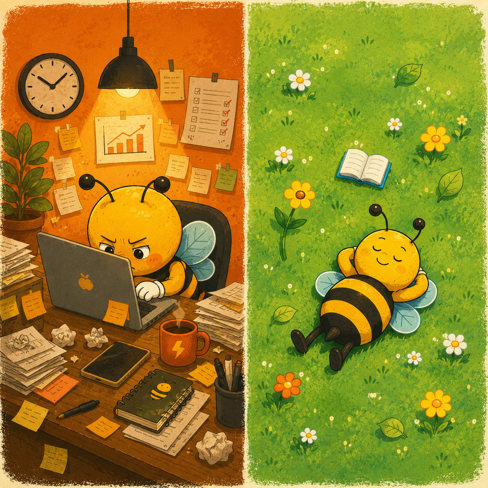
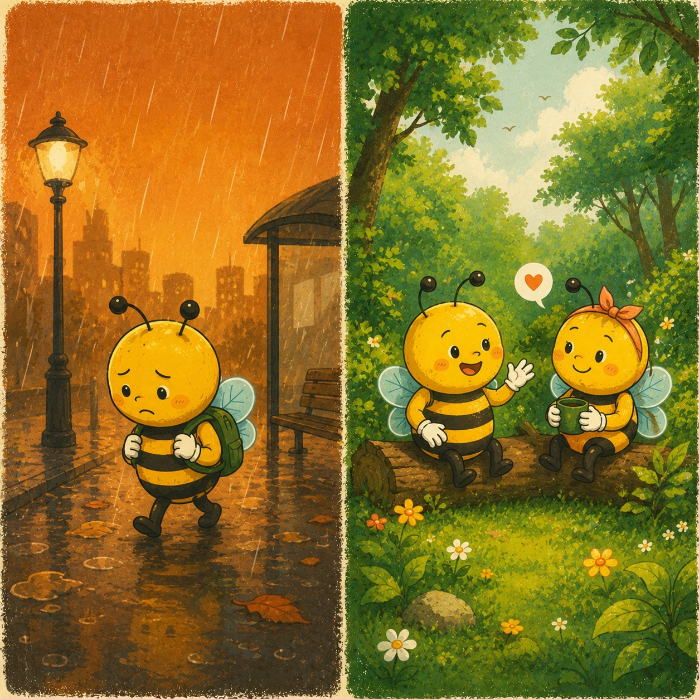
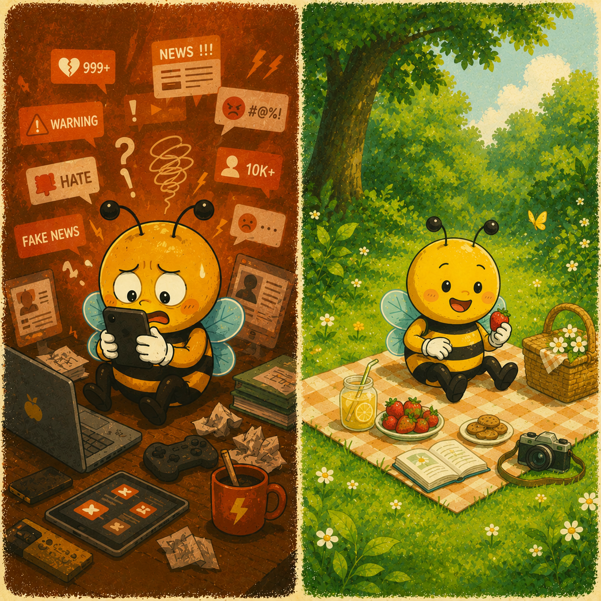

No Screen. More Green. Real You.
A journey to help you temporarily step away from screens to connect with nature, yourself, and the people around you, while learning how to proactively perceive and filter the world of information.
It's time to pause and listen to yourself..

Work pressure leaves you constantly exhausted, lacking energy, and with no time to take care of yourself.

Work, phones, and deadlines consume all your time for family, friends, and meaningful experiences.

Fake news, sensational content, and hateful speech constantly pull you into a negative flow of information making it hard to distinguish what is trustworthy and what truly matters.
It's time to experience "DIGITAL DETOX CAMP"
Buzz Off is a Digital Detox Camp where you temporarily set aside devices that keep you "connected" to the world, but sometimes inadvertently cause us to "disconnect" from ourselves and our loved ones.
On this journey, you will join us in various activities amidst nature, from trekking, camping, and workshops to quiet moments for breathing, observing, and listening to your inner self. Each experience is designed to help you recharge your energy, find balance, and connect more deeply with life.

More than just a trip, this is a journey to help you recharge your energy, find balance, and build a healthy lifestyle in the digital age.

Temporarily step away from the pressures, deadlines, and endless hustle of everyday life. Through hands-on activities, exploring nature, and meaningful quiet moments, Buzz Off helps you renew your mental energy, relieve stress, and learn to care for yourself through mindful presence.

Share, listen, and learn from real-life stories with a community of seniors, while discovering how to recognize and filter trustworthy information in the digital world. To realize that sometimes what helps us find balance is not connecting more online, but connecting deeper with the people right beside us.

Amidst the massive flow of information in the digital age, Buzz Off offers you the chance to "cleanse" your mind from negative content. Combining the Digital Detox experience with mindfulness and cognitive development activities, you will regain deep focus, nurture inner peace, and build a healthier relationship with technology.
Begin a 36-hour offline journey where each experience brings you closer to nature, the people around you, and your true self.
Begin a 36-hour offline journey with the Buzzoff Handbook. Put down your screen and open up a completely different experience.
Explore historical sites, people, and authentic perspectives existing outside the internet world.
Decode the issues of the digital world: fake news, deepfake, algorithms, and hate speech through practical interactive challenges.
Eat together, have real conversations, gaze at the stars, and listen to the things that a busy life sometimes makes us forget..
Share and learn with seniors on how to recognize, verify, and choose reliable information on the internet.